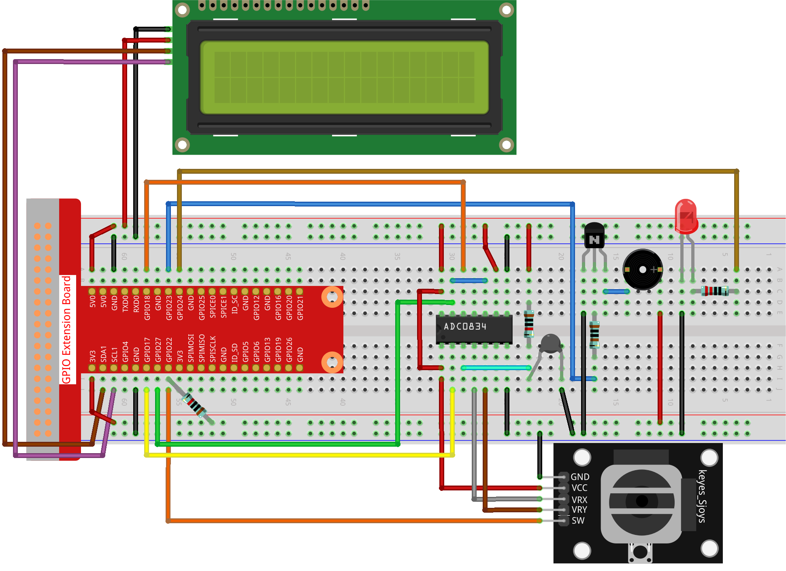

Bemerkung
Hallo und willkommen in der SunFounder Raspberry Pi & Arduino & ESP32 Enthusiasten-Gemeinschaft auf Facebook! Tauchen Sie tiefer ein in die Welt von Raspberry Pi, Arduino und ESP32 mit anderen Enthusiasten.
Warum beitreten?
Expertenunterstützung: Lösen Sie Nachverkaufsprobleme und technische Herausforderungen mit Hilfe unserer Gemeinschaft und unseres Teams.
Lernen & Teilen: Tauschen Sie Tipps und Anleitungen aus, um Ihre Fähigkeiten zu verbessern.
Exklusive Vorschauen: Erhalten Sie frühzeitigen Zugang zu neuen Produktankündigungen und exklusiven Einblicken.
Spezialrabatte: Genießen Sie exklusive Rabatte auf unsere neuesten Produkte.
Festliche Aktionen und Gewinnspiele: Nehmen Sie an Gewinnspielen und Feiertagsaktionen teil.
👉 Sind Sie bereit, mit uns zu erkunden und zu erschaffen? Klicken Sie auf [hier] und treten Sie heute bei!
3.1.8 Überhitzungsüberwachung
Einleitung
Sie möchten ein Überhwärmeüberwachungsgerät entwickeln, das in verschiedenen Situationen angewendet werden kann, z. B. in einer Fabrik, wenn ein Alarmsignal ausgelöst und die Maschine rechtzeitig ausgeschaltet werden soll, wenn es zu einer Überhitzung des Stromkreises kommt. In diesem Projekt verwenden wir einen Thermistor, einen Joystick, einen Summer, eine LED und ein LCD, um ein intelligentes Temperaturüberwachungsgerät zu erstellen, dessen Schwellenwert einstellbar ist.
Benötigte Komponenten
Für dieses Projekt benötigen wir die folgenden Komponenten.

Schaltplan
T-Karte Name |
physisch |
wiringPi |
BCM |
GPIO17 |
Pin 11 |
0 |
17 |
GPIO18 |
Pin 12 |
1 |
18 |
GPIO27 |
Pin 13 |
2 |
27 |
GPIO22 |
Pin15 |
3 |
22 |
GPIO23 |
Pin16 |
4 |
23 |
GPIO24 |
Pin18 |
5 |
24 |
SDA1 |
Pin 3 |
||
SCL1 |
Pin 5 |

Versuchsdurchführung
Schritt 1: Bauen Sie die Schaltung.
Schritt 2: Gehen Sie zum Ordner mit dem Code.
cd ~/davinci-kit-for-raspberry-pi/python-pi5
Schritt 3: Führen Sie die ausführbare Datei aus.
sudo python3 3.1.8_OverheatMonitor_zero.py
Während der Code ausgeführt wird, werden die aktuelle Temperatur und die Hochtemperaturschwelle von 40 auf einem I2C LCD1602 angezeigt. Wenn die aktuelle Temperatur höher ist als die Schwelle, wird der Summer und die LED aktiviert, um Sie zu alarmieren.
Der Joystick dient dazu, die Hochtemperaturschwelle anzupassen. Das Drehen des Joystick in Richtung der X- und Y-Achse kann die aktuelle Hochtemperaturschwelle erhöhen oder verringern. Drücken Sie den Joystick erneut, um die Schwelle auf den Ausgangswert zurückzusetzen.
Bemerkung
Wenn der Fehler
FileNotFoundError: [Errno 2] No such file or directory: '/dev/i2c-1'auftritt, müssen Sie I2C configuration aufrufen, um I2C zu aktivieren.Wenn der Fehler
ModuleNotFoundError: No module named 'smbus2'auftritt, führen Siesudo pip3 install smbus2aus.Wenn der Fehler
OSError: [Errno 121] Remote I/O errorauftritt, bedeutet dies, dass das Modul falsch angeschlossen ist oder defekt ist.Wenn der Code und die Verkabelung in Ordnung sind, das LCD jedoch keinen Inhalt anzeigt, können Sie den Potenziometer auf der Rückseite drehen, um den Kontrast zu erhöhen.
Warnung
Wenn die Fehlermeldung RuntimeError: Cannot determine SOC peripheral base address angezeigt wird, lesen Sie bitte Wenn gpiozero nicht funktioniert.
Code
Bemerkung
Sie können den folgenden Code ändern/zurücksetzen/kopieren/ausführen/anhalten. Davor müssen Sie jedoch zum Quellcodepfad wie raphael-kit/python gehen. Nachdem Sie den Code geändert haben, können Sie ihn direkt ausführen, um die Wirkung zu sehen.
#!/usr/bin/env python3
import LCD1602
from gpiozero import LED, Buzzer, Button
import ADC0834
import time
import math
# Initialisieren Sie Joystick-Taste, Summer und LED
Joy_BtnPin = Button(22)
buzzPin = Buzzer(23)
ledPin = LED(24)
# Setzen Sie die anfängliche obere Temperaturschwelle
upperTem = 40
# Setup ADC- und LCD-Module
ADC0834.setup()
LCD1602.init(0x27, 1)
def get_joystick_value():
"""
Liest die Joystick-Werte und gibt einen Änderungswert basierend auf der Position des Joysticks zurück.
"""
x_val = ADC0834.getResult(1)
y_val = ADC0834.getResult(2)
if x_val > 200:
return 1
elif x_val < 50:
return -1
elif y_val > 200:
return -10
elif y_val < 50:
return 10
else:
return 0
def upper_tem_setting():
"""
Passt die obere Temperaturschwelle an und zeigt sie auf dem LCD an.
"""
global upperTem
LCD1602.write(0, 0, 'Oben anpassen: ')
change = int(get_joystick_value())
upperTem += change
strUpperTem = str(upperTem)
LCD1602.write(0, 1, strUpperTem)
LCD1602.write(len(strUpperTem), 1, ' ')
time.sleep(0.1)
def temperature():
"""
Liest die aktuelle Temperatur vom Sensor und gibt sie in Grad Celsius zurück.
"""
analogVal = ADC0834.getResult()
Vr = 5 * float(analogVal) / 255
Rt = 10000 * Vr / (5 - Vr)
temp = 1 / (((math.log(Rt / 10000)) / 3950) + (1 / (273.15 + 25)))
Cel = temp - 273.15
return round(Cel, 2)
def monitoring_temp():
"""
Überwacht und zeigt die aktuelle Temperatur und die obere Temperaturschwelle an. Aktiviert den Summer und die LED, wenn die Temperatur den oberen Grenzwert überschreitet.
"""
global upperTem
Cel = temperature()
LCD1602.write(0, 0, 'Temp: ')
LCD1602.write(0, 1, 'Oben: ')
LCD1602.write(6, 0, str(Cel))
LCD1602.write(7, 1, str(upperTem))
time.sleep(0.1)
if Cel >= upperTem:
buzzPin.on()
ledPin.on()
else:
buzzPin.off()
ledPin.off()
# Hauptausführungsschleife
try:
lastState = 1
stage = 0
while True:
currentState = Joy_BtnPin.value
# Wechseln Sie zwischen Einstell- und Überwachungsmodus
if currentState == 1 and lastState == 0:
stage = (stage + 1) % 2
time.sleep(0.1)
LCD1602.clear()
lastState = currentState
if stage == 1:
upper_tem_setting()
else:
monitoring_temp()
except KeyboardInterrupt:
# Bereinigen und beenden
LCD1602.clear()
ADC0834.destroy()
Code-Erklärung
In diesem Abschnitt werden die erforderlichen Bibliotheken für das Projekt importiert.
LCD1602ist für das LCD-Display,gpiozerobietet Klassen für LED, Summer und Taste,ADC0834ist für die Analog-Digital-Umwandlung undtimeundmathsind Python-Standardbibliotheken für zeitbezogene Funktionen bzw. mathematische Operationen.#!/usr/bin/env python3 import LCD1602 from gpiozero import LED, Buzzer, Button import ADC0834 import time import math
Hier werden die Joystick-Taste, der Summer und die LED initialisiert.
Button(22)erstellt ein Tastenobjekt, das mit dem GPIO-Pin 22 verbunden ist.Buzzer(23)undLED(24)initialisieren den Summer bzw. die LED an den GPIO-Pins 23 bzw. 24.# Initialisieren Sie Joystick-Taste, Summer und LED Joy_BtnPin = Button(22) buzzPin = Buzzer(23) ledPin = LED(24)
Legt die anfängliche obere Temperaturschwelle fest und initialisiert die ADC- und LCD-Module. Das LCD wird mit einer Adresse (
0x27) und einem Modus (1) initialisiert.# Setzen Sie die anfängliche obere Temperaturschwelle upperTem = 40 # Setup ADC- und LCD-Module ADC0834.setup() LCD1602.init(0x27, 1)
Diese Funktion liest die X- und Y-Werte des Joysticks mithilfe von ADC0834 aus. Sie gibt einen Änderungswert basierend auf der Position des Joysticks zurück, der zur Anpassung der Temperaturschwelle verwendet wird.
def get_joystick_value(): """ Liest die Joystick-Werte und gibt einen Änderungswert basierend auf der Position des Joysticks zurück. """ x_val = ADC0834.getResult(1) y_val = ADC0834.getResult(2) if x_val > 200: return 1 elif x_val < 50: return -1 elif y_val > 200: return -10 elif y_val < 50: return 10 else: return 0
Passt die obere Temperaturschwelle mithilfe der Joystick-Eingabe an. Die neue Schwelle wird auf dem LCD angezeigt.
def upper_tem_setting(): """ Passt die obere Temperaturschwelle an und zeigt sie auf dem LCD an. """ global upperTem LCD1602.write(0, 0, 'Oben anpassen: ') change = int(get_joystick_value()) upperTem += change strUpperTem = str(upperTem) LCD1602.write(0, 1, strUpperTem) LCD1602.write(len(strUpperTem), 1, ' ') time.sleep(0.1)
Liest die aktuelle Temperatur mithilfe des Sensors mit ADC0834 und gibt sie in Grad Celsius zurück.
def temperature(): """ Liest die aktuelle Temperatur vom Sensor und gibt sie in Grad Celsius zurück. """ analogVal = ADC0834.getResult() Vr = 5 * float(analogVal) / 255 Rt = 10000 * Vr / (5 - Vr) temp = 1 / (((math.log(Rt / 10000)) / 3950) + (1 / (273.15 + 25))) Cel = temp - 273.15 return round(Cel, 2)
Überwacht und zeigt die aktuelle Temperatur und die obere Schwelle an. Wenn die Temperatur die obere Schwelle überschreitet, werden der Summer und die LED aktiviert.
def monitoring_temp(): """ Überwacht und zeigt die aktuelle Temperatur und die obere Temperaturschwelle an. Aktiviert den Summer und die LED, wenn die Temperatur den oberen Grenzwert überschreitet. """ global upperTem Cel = temperature() LCD1602.write(0, 0, 'Temp: ') LCD1602.write(0, 1, 'Oben: ') LCD1602.write(6, 0, str(Cel)) LCD1602.write(7, 1, str(upperTem)) time.sleep(0.1) if Cel >= upperTem: buzzPin.on() ledPin.on() else: buzzPin.off() ledPin.off()
Die Hauptausführungsschleife wechselt basierend auf den Tastendrücken der Joystick-Taste zwischen Einstell- und Überwachungsmodus. Sie aktualisiert kontinuierlich entweder die Temperatureinstellung oder überwacht die aktuelle Temperatur.
# Hauptausführungsschleife try: lastState = 1 stage = 0 while True: currentState = Joy_BtnPin.value # Wechseln Sie zwischen Einstell- und Überwachungsmodus if currentState == 1 and lastState == 0: stage = (stage + 1) % 2 time.sleep(0.1) LCD1602.clear() lastState = currentState if stage == 1: upper_tem_setting() else: monitoring_temp() except KeyboardInterrupt: # Bereinigen und beenden LCD1602.clear() ADC0834.destroy()